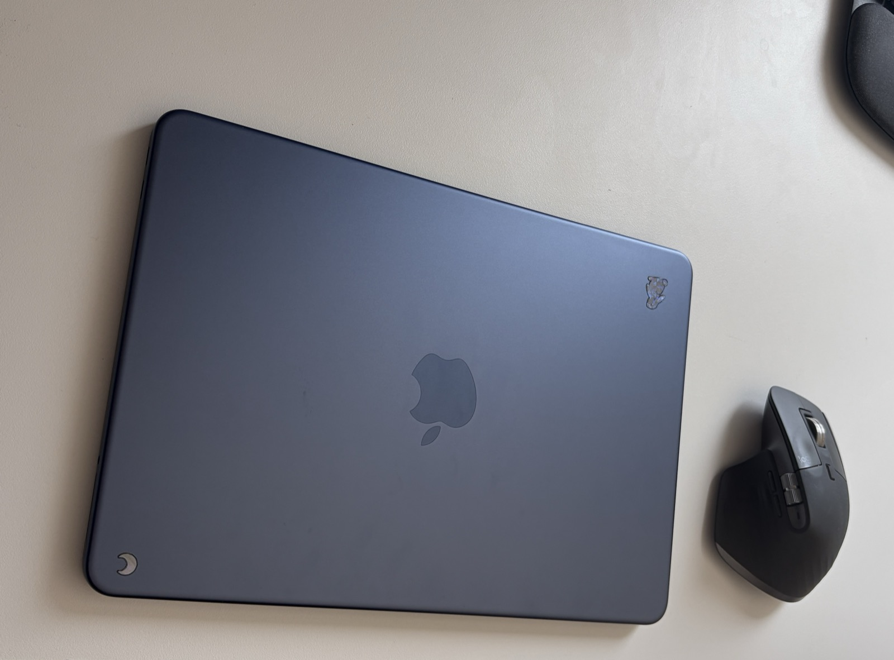
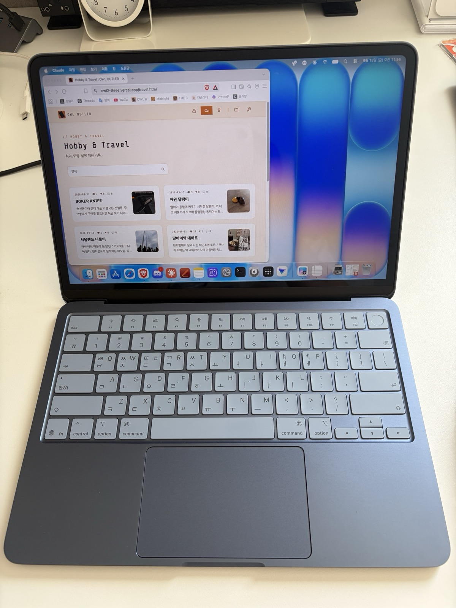

저렴하고 이쁘고, 한번쯤 경험해보고 싶었던 맥북을 샀다. 좋은 성능이 그리 필요 없어서 네오로 골랐다.

말로만 듣던 트랙패드, 좋았다
말로만 듣던 트랙패드 사용감. 확실히 좋았다. 지금은 트랙패드에 로지텍 MX Master 3S를 같이 쓰고 있는데, 이 조합이 아주 예술이다. 이제 윈도우로 못 돌아가겠다.
아이폰·아이패드 연동, 시작은 좋았는데
맥북으로 제일 먼저 한 일은 아이폰, 아이패드와의 연동이었다. 아이폰에서 컨트롤+C를 누르고 맥북에서 컨트롤+V를 누르면 문자와 사진이 그대로 넘어오는 편의성이라니, 감탄스러웠다. 하지만 그것도 잠시, 이 기능이 자꾸 에러가 나더라. 결국 나중엔 에어드랍만 쓰게 됐다.
클로드와 함께 하는 멀티태스킹
두 번째로 한 일은 클로드. 뭔가 일을 하나 맡겨놓고, 나는 윈도우 데스크탑이나 아이폰으로 다른 일을 하는 멀티태스킹이 가능해졌다. 맥OS가 처음이라 클로드의 도움을 정말 많이 받았다. "이거 어떻게 해?", "이 기능 있어?", "단축키 뭐야?" 이런 질문을 진짜 백 번은 한 것 같다.
난수 생성과 유비키, 그리고 포맷의 굴레
세 번째로 한 일이자 가장 본격적인 용도는 난수 생성과 유비키(YubiKey)를 이용한 암호화였다. 처음에는 수동으로 와이파이·블루투스를 끄고, 맥북에서 문서를 작성한 다음 암호화해서 저장하고 옮기는 방식으로 썼다. 그러고 나서는 맥북을 포맷(모든 콘텐츠 및 설정 지우기)했다.
윈도우는 포맷해도 파일 찌꺼기가 남아 복구가 가능한 반면, 애플은 디스크를 암호화한 뒤 그 암호 자체를 쪼개버려서 절대 복구가 불가능하다는 설명을 들으니 꽤 믿음직스러웠다. 뭐, 이것도 결국 애플을 신뢰해야 하는 지점이긴 하지만.
하지만 이 짓도 한두 번이지, 포맷을 계속 반복하다 보니 지쳐서 결국 방침을 바꿨다. 집안에 굴러다니던 LG 노트북을 에어갭으로 만들고, 민감한 문서 작성은 거기서 하는 걸로.
지금은 순수 작업 머신
그 이후로 지금의 맥북은 순수하게 AI 작업, 홈페이지 제작, 그리고 복호화 백업머신으로 쓰고 있다.

뭐, 아이폰·아이패드와의 연계는 말할 것도 없다. 음악 넣고 앱 관리하는 작업도 USB 연결하니 바로 되더라고. 결론: 원하던 기능을 100% 수행. 맥OS의 경험 만족스러움. 가격도 만족. 평점 별 네개반 ⭐️⭐️⭐️⭐️✨